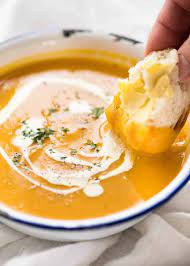

This banana bread recipe creates the most delicious, moist loaf with loads of banana flavor. Why compromise the banana flavor? Friends and family love my recipe and say it's by far the best! It tastes wonderful toasted. Enjoy!
Ingredients:
- 2 cups all-purpose flour
- 1 teaspoon baking soda
- ¼ teaspoon salt
- ¾ cup brown sugar
- ½ cup butter
- 2 eggs, beaten
- 2 ⅓ cups mashed overripe bananas
Steps:
- Preheat the oven to 350 degrees F (175 degrees C). Lightly grease a 9x5-inch loaf pan.
- Combine flour, baking soda, and salt in a large bowl. Beat brown sugar and butter with an electric mixer in a separate large bowl until smooth. Stir in eggs and mashed bananas until well blended. Stir banana mixture into flour mixture until just combined. Pour batter into the prepared loaf pan.
- Bake in the preheated oven until a toothpick inserted into the center comes out clean, about 60 minutes. Let bread cool in pan for 10 minutes, then turn out onto a wire rack to cool completely.

These homemade cream puffs are made with a light choux pastry that puffs up when baked. In this version, they are filled with a rich vanilla cream that's easy to make with instant pudding. Drizzle melted chocolate on top for a fancy dessert that will wow your guests!
Ingredients
- 2 (3.5 ounce) packages instant vanilla pudding mix
- 2 cups heavy cream
- 1 cup milk
- ½ cup butter
- 1 cup water
- ¼ teaspoon salt
- 1 cup all-purpose flour
- 4 large eggs
Steps:
- Mix together vanilla instant pudding mix, cream and milk. Cover and refrigerate to set.
- Preheat oven to 425 degrees F (220 degrees C).
- In a large pot, bring water and butter to a rolling boil.
- Stir in flour and salt until the mixture forms a ball
- Transfer the dough to a large mixing bowl. Using a wooden spoon or stand mixer, beat in the eggs one at a time, mixing well after each.
- Drop by tablespoonfuls onto an ungreased baking sheet, spacing them a couple of inches apart.
- Bake for 20 to 25 minutes in the preheated oven, until golden brown. Centers should be dry.
- When the shells are cool, either split and fill them with the pudding mixture, or use a pastry bag to pipe the pudding into the shells.
- Enjoy!

This creamy pumpkin soup is perfect for a cozy fall evening. It's made with fresh pumpkin, spices, and a touch of cream for richness.
Ingredients
- 1 medium pumpkin, peeled and diced
- 1 onion, chopped
- 2 cloves garlic, minced
- 4 cups vegetable broth
- 1 teaspoon ground cinnamon
- ½ teaspoon nutmeg
- Salt and pepper to taste
- ½ cup heavy cream (optional)
Steps:
- Sauté onion and garlic in a large pot until soft.
- Add diced pumpkin, vegetable broth, cinnamon, nutmeg, salt, and pepper. Bring to a boil.
- Reduce heat and simmer until pumpkin is tender, about 20 minutes.
- Blend the soup until smooth. Stir in heavy cream if desired.
- Serve hot with crusty bread.